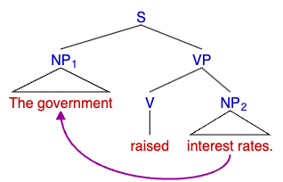
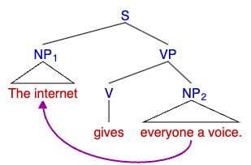
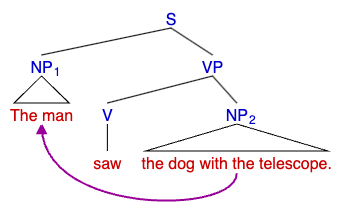

Natural language processing
What is natural language processing?
Natural language processing (or NLP) is a field of artificial intelligence that studies the interaction between computers and human language.
According to Jurafsky & Martin (2013), one of the most challenging tasks in NLP is resolving ambiguity. This is because NLP used by humans can be ambiguous, but humans can deal with that ambiguity. However, machines can't deal with such ambiguity. Jurafsky & Martin (2013) define an input to be ambiguous if multiple linguistic structures can be developed for it.
"Consider the spoken sentence I made her duck. Here are five different meanings this sentence could have (see if you can think of some more), each of which exemplifies an ambiguity at some level:
- (1.5) I cooked waterfowl for her.
- (1.6) I cooked waterfowl belonging to her.
- (1.7) I created the (plaster?) duck she owns.
- (1.8) I caused her to quickly lower her head or body.
- (1.9) I waved my magic wand and turned her into undifferentiated waterfowl." (Jurafsky & Martin, 2013)
Levels of linguistic analysis
There are three main levels of analysis of inputs in NLP:
- Syntax: In English, syntax refers to the precise arrangement of words and phrases within a sentence, where altering even a single word's position can completely change the sentence's meaning. Every language adheres to its unique set of rules governing word placement, and adept writers can skillfully manipulate these rules to craft sentences that evoke greater poignancy or poetic expression (Ellis, 2022).
- Semantics: Semantics studies the meaning of words and sentences in the context of linguistics. It explains how native speakers understand the relations between linguistic expressions and non-linguistic concepts (Nordquist, 2020).
- Pragmatics: Pragmatics focuses on specific instances known as utterances, which are intentional acts of speakers that occur in particular times and places, often involving language. Pragmatics is sometimes described as the study of the contextual effects. In essence, this means it is concerned with utterances, considering all the factors that may vary from one instance to another as part of what we collectively refer to as context (Korta & Perry, 2020).
Parse trees
Parse trees are graphical representations of the syntactic structure of a sentence. They illustrate how individual words and phrases are hierarchically organized in a sentence and related based on the language's grammar rules.
A parse tree consists of nodes and edges, where each node represents a word or a phrase, and the edges represent the syntactic relationships between these words and phrases.
The root of the tree represents the entire sentence, while the branches from the root represent different syntactic constituents depending on the depth level in the tree, such as noun phrases, verb phrases, adverbial phrases, etc. Terminal nodes are the individual words in the sentence, and non-terminal nodes represent phrases or other syntactic structures. Parsing involves analyzing the grammatical structure of a given sentence to generate a parse tree. Parse trees are widely used in different NLP tasks, such as syntax analysis, and machine translation (Jurafsky & Martin, 2013).
Parse tree examples
Some parse tree examples are shown below.
The government raised interest rates.

The internet gives everyone a voice.

The man saw the dog with the telescope.

References
Ellis, M. (2022) What Is Syntax? Learn the Meaning and Rules, With Examples. Available from https://www.grammarly.com/blog/syntax/ [Accessed 23 July 2023]
Jurafsky, D. & Martin, J. H. (2013) Speech and language processing. 2nd ed. Harlow: Pearson Education.
Korta, K., & Perry, J. (2020). Pragmatics. In E. N. Zalta (Ed.), The Stanford Encyclopedia of Philosophy (Spring 2020 Edition). Available from https://plato.stanford.edu/archives/spr2020/entries/pragmatics/ [Accessed 23 July 2023]